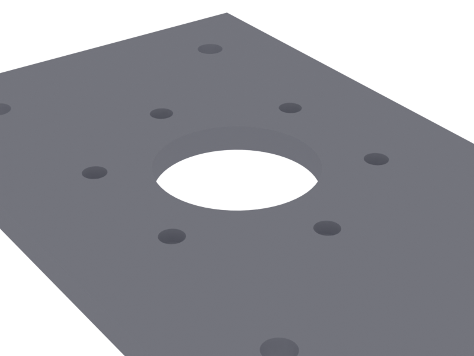

vcad.
parametric cad in rust
csg primitives, boolean operators, multi-format export. built on manifold. mit licensed.
$ cargo add vcadcopied
// plate.rs
use vcad::{centered_cube, centered_cylinder, Part}; // plate with four mounting holes let plate = centered_cube("plate", 100.0, 60.0, 5.0); let hole = centered_cylinder("hole", 3.0, 10.0, 32); let holes = hole.linear_pattern(80.0, 0.0, 0.0, 2) .linear_pattern(0.0, 40.0, 0.0, 2) .translate(-40.0, -20.0, 0.0); let part = plate - holes; part.write_stl("plate.stl").unwrap();
→ plate.stl · 28274 mm³ · 392 triangles

// features
- csg
- union, difference, intersection — as operators (+, -, &)
- export
- stl, gltf, usd, dxf, step. one model, every format.
- inspect
- volume, surface area, bounding box, center of mass
- transform
- mirror, linear pattern, circular pattern, translate, rotate, scale
- materials
- pbr from toml. metallic, roughness, color, density.
- agents
- built for coding agents. api tables, cookbook, blender mcp.
// gallery

// soon
interactive web gui. code → geometry in real time.